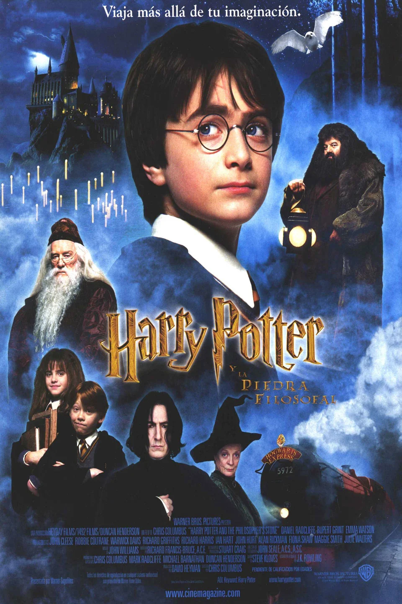
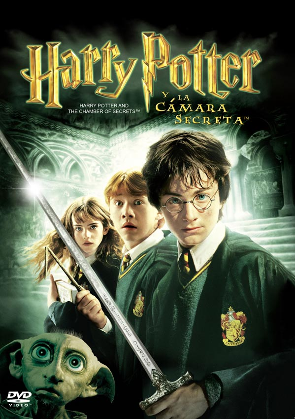

Harry Potter y la Piedra Filosofal
Harry Potter y la Piedra Filosofal es la primera película de la serie. Narra las aventuras de Harry Potter en su primer año en Hogwarts.
Harry Potter y la Cámara Secreta
Harry Potter y la Cámara Secreta es la segunda película de la serie. Harry investiga una serie de ataques misteriosos en Hogwarts.
Harry Potter y el Prisionero de Azkaban

Harry Potter y el Prisionero de Azkaban es la tercera película de la serie. Harry y sus amigos enfrentan a un peligroso fugitivo de Azkaban.